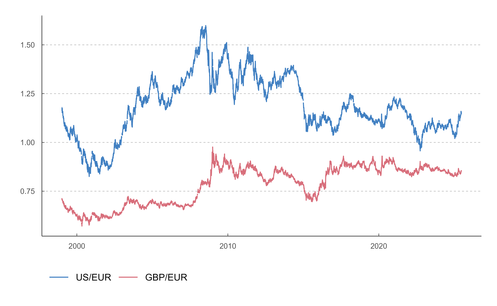

The series alias is a positional code showing the location (column and/or row) of the series in the table. However, although it is unique, it is not a good candidate to be used as the series ID, as it is subject to change. If a series changes position in the table, its alias will also change.
To ensure series can still be identified, even after these changes, they
are assigned a sequential number (series_code on this function) which
will remain unchanged throughout the series' lifetime.
Note that a single series could be used on different tables, so it can have
several aliases. If you need to search by alias it is recommended to use
bde_series_full_load().
Usage
bde_series_load(
series_code,
series_label = NULL,
out_format = "wide",
parse_dates = TRUE,
parse_numeric = TRUE,
cache_dir = NULL,
update_cache = FALSE,
verbose = FALSE,
extract_metadata = FALSE
)Arguments
- series_code
a numeric (or coercible with
base::as.double()value or vector with time-series code(s), as defined in the fieldNúmero secuencialof the corresponding series. Seebde_catalog_load().- series_label
Optional. Character vector or value. Allows to specify a custom label for the series extracted. It should have the same length than
series_code.- out_format
Defines if the format must be returned as a "long" dataset or a "wide" dataset. Possible values are
"wide"or"long". See Value for Details and Section Examples.- parse_dates
Logical. If
TRUEthe dates would be parsed usingbde_parse_dates().- parse_numeric
Logical. If
TRUEthe columns would be parsed to double (numeric) values. See Note.- cache_dir
A path to a cache directory. The directory can also be set via options with
options(bde_cache_dir = "path/to/dir").- update_cache
Logical. If
TRUEthe requested file would be updated on thecache_dir.- verbose
Logical
TRUEorFALSE, display information useful for debugging.- extract_metadata
Logical
TRUE/FALSE. OnTRUEthe output is the metadata of the requested series.
Value
A tibble with a field Date and :
With
out_format = "wide"each series is presented in a separate column with the name defined byseries_label.With
out_format = "long"thetibblewould have two more columns,serie_namewith the labels of each series andserie_valuewith the value of the series.
"wide" format is more suitable for exporting to a .csv file while
"long" format is more suitable for producing plots with
ggplot2::ggplot(). See also tidyr::pivot_longer() and
tidyr::pivot_wider().
Note
This function tries to coerce the columns to numbers. For some series a
warning may be displayed if the parser fails. You can override the default
behavior with parse_numeric = FALSE
See also
bde_catalog_load(),
bde_catalog_search(), bde_indicators()
Other series:
bde_series_full_load()
Examples
# \donttest{
# Metadata
bde_series_load(573234, verbose = TRUE, extract_metadata = TRUE)
#> tidyBdE> Caching on temporary directory C:\Users\RUNNER~1\AppData\Local\Temp\Rtmpqc17LL
#> tidyBdE> Cached version of BE detected
#> tidyBdE> Cached version of SI detected
#> tidyBdE> Cached version of TC detected
#> tidyBdE> Cached version of TI detected
#> tidyBdE> Cached version of PB detected
#> tidyBdE> Parsing dates
#> tidyBdE> Extracting series 573234
#>
#> tidyBdE> Downloading serie 573234 from file TC_1_1.csv (alias TC_1_1.1).
#> tidyBdE> Caching on temporary directory C:\Users\RUNNER~1\AppData\Local\Temp\Rtmpqc17LL/TC
#> tidyBdE> Downloading file from https://www.bde.es/webbe/es/estadisticas/compartido/datos/csv/tc_1_1.csv
#>
#> # A tibble: 6 × 2
#> Date `573234`
#> <chr> <chr>
#> 1 CÓDIGO DE LA SERIE DTCCBCEUSDEUR.B
#> 2 NÚMERO SECUENCIAL 573234
#> 3 ALIAS DE LA SERIE TC_1_1.1
#> 4 DESCRIPCIÓN DE LA SERIE Tipo de cambio. Dólares estadounidenses por euro …
#> 5 DESCRIPCIÓN DE LAS UNIDADES Dólares de Estados Unidos por Euro
#> 6 FRECUENCIA LABORABLE
# Data
bde_series_load(573234, extract_metadata = FALSE)
#> # A tibble: 6,876 × 2
#> Date `573234`
#> <date> <dbl>
#> 1 1999-01-04 1.18
#> 2 1999-01-05 1.18
#> 3 1999-01-06 1.17
#> 4 1999-01-07 1.16
#> 5 1999-01-08 1.17
#> 6 1999-01-11 1.16
#> 7 1999-01-12 1.15
#> 8 1999-01-13 1.17
#> 9 1999-01-14 1.17
#> 10 1999-01-15 1.16
#> # ℹ 6,866 more rows
# Vectorized
bde_series_load(c(573234, 573214),
series_label = c("US/EUR", "GBP/EUR"),
extract_metadata = TRUE
)
#> # A tibble: 6 × 3
#> Date `US/EUR` `GBP/EUR`
#> <chr> <chr> <chr>
#> 1 CÓDIGO DE LA SERIE DTCCBCEUSDEUR.B DTCCBCEG…
#> 2 NÚMERO SECUENCIAL 573234 573214
#> 3 ALIAS DE LA SERIE TC_1_1.1 TC_1_1.4
#> 4 DESCRIPCIÓN DE LA SERIE Tipo de cambio. Dólares estadounidenses… Tipo de …
#> 5 DESCRIPCIÓN DE LAS UNIDADES Dólares de Estados Unidos por Euro Libras e…
#> 6 FRECUENCIA LABORABLE LABORABLE
wide <- bde_series_load(c(573234, 573214),
series_label = c("US/EUR", "GBP/EUR")
)
# Wide format
wide
#> # A tibble: 6,876 × 3
#> Date `US/EUR` `GBP/EUR`
#> <date> <dbl> <dbl>
#> 1 1999-01-04 1.18 0.711
#> 2 1999-01-05 1.18 0.712
#> 3 1999-01-06 1.17 0.708
#> 4 1999-01-07 1.16 0.706
#> 5 1999-01-08 1.17 0.709
#> 6 1999-01-11 1.16 0.704
#> 7 1999-01-12 1.15 0.707
#> 8 1999-01-13 1.17 0.708
#> 9 1999-01-14 1.17 0.706
#> 10 1999-01-15 1.16 0.704
#> # ℹ 6,866 more rows
# Long format
long <- bde_series_load(c(573234, 573214),
series_label = c("US/EUR", "GBP/EUR"),
out_format = "long"
)
long
#> # A tibble: 13,752 × 3
#> Date serie_name serie_value
#> <date> <fct> <dbl>
#> 1 1999-01-04 US/EUR 1.18
#> 2 1999-01-05 US/EUR 1.18
#> 3 1999-01-06 US/EUR 1.17
#> 4 1999-01-07 US/EUR 1.16
#> 5 1999-01-08 US/EUR 1.17
#> 6 1999-01-11 US/EUR 1.16
#> 7 1999-01-12 US/EUR 1.15
#> 8 1999-01-13 US/EUR 1.17
#> 9 1999-01-14 US/EUR 1.17
#> 10 1999-01-15 US/EUR 1.16
#> # ℹ 13,742 more rows
# Use with ggplot
library(ggplot2)
ggplot(long, aes(Date, serie_value)) +
geom_line(aes(group = serie_name, color = serie_name)) +
scale_color_bde_d() +
theme_tidybde()

# }